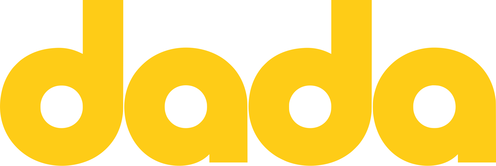

Siyaset, toplum, hukuk, çevre ve yerel haberler.
Branşlar, canlı skorlar, puan durumu ve fikstür.
Piyasalar, kişisel finans, sektörler ve iş dünyası.
Kadın gündemi, sağlık, hak ve yaşam içerikleri.
Savunma sanayii, millî projeler ve güvenlik gündemi.
Bölgeler, diplomasi ve küresel gelişmeler.
Sınav, burs, staj ve üniversite hayatı.
Ana menüde yer almayan bütün kategoriler, formatlar ve anlık gelişmeler.